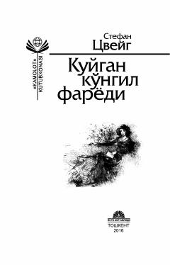

KKStefan Svaynning ayol qalbi haqidagi eng ta'sirchan novellalari to'plami.
Bu kitob buyuk avstriya yozuvchisi Stefan Svaynning eng sara novellalari va afsonalarini o'z ichiga oladi. Asarlarda ayol qalbining nozik kechinmalari, sevgi va ichki iztiroblar haqqoniy tarzda tasvirlanadi. Kitob o'zbek tiliga Sharif Tolibov, Mahkam Mahmudov va O'tkir Hoshimov tomonidan tarjima qilingan.